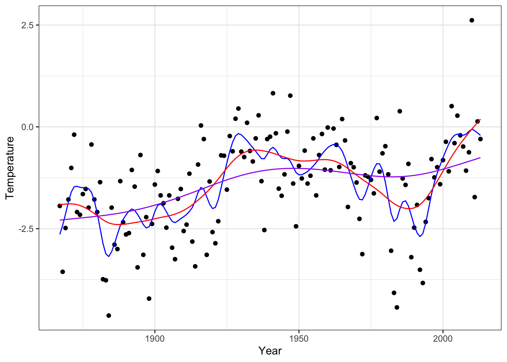

3.5 Splines
In the previous section orthogonality of basis functions played an important role for computing basis function expansions efficiently as well as for the statistical assessment of estimated coefficients. This section will deal with bivariate smoothing via basis functions that are not necessarily orthogonal.
Though some of the material of this section will apply to any choice of basis, we restrict attention to splines and consider almost exclusively the widely used B-splines (the “B” is for basis).
3.5.1 Smoothing splines
To motivate splines we briefly consider the following penalized least squares criterion for finding a smooth approximation to bivariate data: minimize \[\begin{equation} L(f) = \sum_{i=1}^n (y_i - f(x_i))^2 + \lambda \|f''\|_2^2 \tag{3.1} \end{equation}\]over all twice differentiable functions \(f\). The first term is the standard squared error, and we can easily find a smooth function interpolating the \(y\)-values (if all the \(x\)-values are different), which will thus drive the squared error to 0. The squared 2-norm regularizes the minimization problem so that the minimizer finds a balance between interpolation and having a small second derivative (note that \(\|f''\|_2 = 0\) if and only if \(f\) is an affine function). The tuning parameter \(\lambda\) controls this balance.
It is possible to show that the minimizer of (3.1) is a natural cubic spline with knots in the data points \(x_i\). That is, the spline is a \(C^2\)-function that equals a third degree polynomial in between the knots. At the knots, the two polynomials that meet fit together up to the second derivative, but they may differ on the third derivative. That the solution is natural means that it has zero second and third derivative at and beyond the two boundary knots.
It is not particularly difficult to show that the space of natural cubic splines is a vector space of dimension \(n\) if all the \(x\)-values are different. It is therefore possible to find a basis of splines, \(\varphi_1, \ldots, \varphi_n\), such that the \(f\) that minimizes (3.1) is of the form \[f = \sum_{i=1}^n \beta_i \varphi_i.\] What is remarkable about this is that the basis (and the finite dimensional vector space it spans) doesn’t depend upon the \(y\)-values. Though the optimization is over an infinite dimensional space, the penalization ensures that the minimizer is always in the same finite dimensional space nomatter what \(y_1, \ldots, y_n\) are. Moreover, since (3.1) is a quite natural criterion to minimize to find a smooth function fitting the bivariate data, splines appear as good candidates for producing such smooth fits. On top of that, splines have several computational advantages and are widely used.
If we let \(\hat{f}_i = \hat{f}(x_i)\) with \(\hat{f}\) the minimizer of (3.1), we have in vector notation that \[\hat{\mathbf{f}} = \boldsymbol{\Phi}\hat{\beta}\] with \(\boldsymbol{\Phi}_{ij} = \varphi_j(x_i)\). The minimizer can be found by observing that
\[\begin{align} L(\mathbf{f}) & = (\mathbf{y} - \mathbf{f})^T (\mathbf{y} - \mathbf{f}) + \lambda \| f'' \|_2^2 \\ & = ( \mathbf{y} - \boldsymbol{\Phi}\beta)^T (\mathbf{y} - \boldsymbol{\Phi}\beta) + \lambda \beta^T \mathbf{\Omega} \beta \end{align}\]where \[\mathbf{\Omega}_{ij} = \langle \varphi_i'', \varphi_j'' \rangle = \int \varphi_i''(z) \varphi_j''(z) \mathrm{d}z.\] The matrix \(\mathbf{\Omega}\) is positive semidefinite by construction, and we refer to it as the penalty matrix. It induces a seminorm on \(\mathbb{R}^n\) so that we can express the seminorm, \(\|f''\|_2\), of \(f\) in terms of the parameters in the basis expansion using \(\varphi_i\).
This is a standard penalized least squares problem, whose solution is \[\hat{\beta} = (\boldsymbol{\Phi}^T \boldsymbol{\Phi} + \lambda \mathbf{\Omega})^{-1}\boldsymbol{\Phi}^T \mathbf{y}\] and with resulting smoother \[\hat{\mathbf{f}} = \underbrace{\boldsymbol{\Phi} ((\boldsymbol{\Phi}^T \boldsymbol{\Phi} + \lambda \mathbf{\Omega})^{-1}\boldsymbol{\Phi}^T}_{\mathbf{S}_{\lambda}} \mathbf{y}.\] This linear smoother with smoothing matrix \(\mathbf{S}_{\lambda}\) based on natural cubic splines gives what is known as a smoothing spline that minimizes (3.1). We will pursue spline based smoothing by minimizing (3.1) but using various B-spline bases that may have more or less than \(n\) elements. For the linear algebra, it doesn’t matter what basis we choose as long as \(\boldsymbol{\Phi}_{ij} = \varphi_j(x_i)\) and \(\mathbf{\Omega}\) is given in terms of \(\varphi''_i\) as above.
3.5.2 Splines in R
The splines package in R implements some of the basic functions needed to work with splines. In particular, the splineDesign function that computes evaluations of B-splines and their derivatives.
library(splines)## Note the specification of repeated boundary knots
knots <- c(0, 0, 0, seq(0, 1, 0.2), 1, 1, 1)
xx <- seq(0, 1, 0.005)
B_splines <- splineDesign(knots, xx)
matplot(xx, B_splines, type = "l", lty = 1)
Figure 3.9: B-spline basis as computed by splineDesign.
The basis shown in Figure 3.9 is an example of a cubic B-spline basis with 11 inner knots in \(0, 0.1, \ldots, 0.9, 1\). The repeated boundary knots control how the spline basis behaves close to the boundaries of the interval. This basis has 13 basis functions, not 11, and spans a larger space than the space of natural cubic splines. It is possible to compute a basis based on B-splines for the natural cubic splines using the function ns, but for all practical purposes this is not important, and we will work exclusively with the B-spline basis itself.
The computation of the penalty matrix \(\mathbf{\Omega}\) constitutes a practical problem, but observing that \(\varphi''_i\) is an affine function in between knots leads to a simple way of computing \(\mathbf{\Omega}_{ij}\). Letting \(g_{ij} = \varphi''_i \varphi''_j\) it holds that \(g_{ij}\) is quadratic between two consecutive knots \(a\) and \(b\), in which case \[\int_a^b g_{ij}(z) \mathrm{d}z = \frac{b - a}{6}\left(g_{ij}(a) + 4 g_{ij}\left(\frac{b-a}{2}\right) + g_{ij}(b)\right).\] This identity is behind Simpson’s rule for numerical integration, and the fact that this is an identity for quadratic polynomials, and not an approximation, means that Simpson’s rule applied appropriately leads to exact computation of \(\mathbf{\Omega}_{ij}\). All we need is the ability to evaluate \(\varphi''_i\) at certain points, and splineDesign can be used for that.
pen_mat <- function(inner_knots) {
knots <- sort(c(rep(range(inner_knots), 3), inner_knots))
d <- diff(inner_knots) ## the vector of knot differences; b - a
g_ab <- splineDesign(knots, inner_knots, derivs = 2)
knots_mid <- inner_knots[-length(inner_knots)] + d / 2
g_ab_mid <- splineDesign(knots, knots_mid, derivs = 2)
g_a <- g_ab[-nrow(g_ab), ]
g_b <- g_ab[-1, ]
(crossprod(d * g_a, g_a) +
4 * crossprod(d * g_ab_mid, g_ab_mid) +
crossprod(d * g_b, g_b)) / 6
}It is laborious to write good tests of pen_mat. We would have to work out a set of example matrices by other means, e.g. by hand. Alternatively, we can compare to a simpler numerical integration technique using Riemann sums.
tmp_deriv <- splineDesign(c(0, 0, 0, 0, 0.5, 1, 1, 1, 1),
seq(0, 1, 1e-5), derivs = 2)
Omega_numeric <- crossprod(tmp_deriv[-1, ]) * 1e-5 ## Right Riemann sums
Omega <- pen_mat(c(0, 0.5, 1))
Omega_numeric / Omega## [,1] [,2] [,3] [,4] [,5]
## [1,] 0.9999700 0.9999673 0.999940 1.000000 NaN
## [2,] 0.9999673 0.9999663 0.999955 1.000000 1.000000
## [3,] 0.9999400 0.9999550 1.000000 1.000045 1.000060
## [4,] 1.0000000 1.0000000 1.000045 1.000034 1.000033
## [5,] NaN 1.0000000 1.000060 1.000033 1.000030range((Omega_numeric - Omega) / (Omega + 0.001)) ## Relative error## [1] -5.99967e-05 5.99983e-05And we should also test an example with non-equidistant knots.
tmp_deriv <- splineDesign(c(0, 0, 0, 0, 0.2, 0.3, 0.5, 0.6, 0.65, 0.7, 1, 1, 1, 1),
seq(0, 1, 1e-5), derivs = 2)
Omega_numeric <- crossprod(tmp_deriv[-1, ]) * 1e-5 ## Right Riemann sums
Omega <- pen_mat(c(0, 0.2, 0.3, 0.5, 0.6, 0.65, 0.7, 1))
range((Omega_numeric - Omega) / (Omega + 0.001)) ## Relative error## [1] -0.0001607084 0.0002545494These examples indicate that pen_mat computes \(\mathbf{\Omega}\) correctly, in particular as increasing the Riemann sum precision by lowering the number \(10^{-5}\) will decrease the relative error (not shown). Of course, correctness ultimately depends on splineDesign computing the correct second derivatives, which hasn’t been tested here.
We can also test how our implementation of smoothing splines works on data. We do this here by implementing the matrix-algebra directly for computing \(\mathbf{S}_{\lambda} \mathbf{y}\).
inner_knots <- Nuuk_year$Year
Phi <- splineDesign(c(rep(range(inner_knots), 3), inner_knots), inner_knots)
Omega <- pen_mat(inner_knots)
smoother <- function(lambda)
Phi %*% solve(crossprod(Phi) + lambda * Omega, t(Phi) %*% Nuuk_year$Temperature)
p_Nuuk +
geom_line(aes(y = smoother(0.1)), color = "blue") + ## Undersmooth
geom_line(aes(y = smoother(10)), color = "red") + ## Smooth
geom_line(aes(y = smoother(1000)), color = "purple") ## Oversmooth
Smoothing splines can be computed using the R function smooth.spline from the stats package. It uses generalized cross validation (GCV) by default for automatically choosing the tuning parameter \(\lambda\), but one can also manually specify the amount of smoothing using one of the arguments lambda, spar or df (the latter being the trace of the smoother matrix). Note, however, that due to internal differences from the splineDesign basis above, the lambda argument to smooth.spline does not match the \(\lambda\) parameter above. To compare our results to smooth.spline we therefore optimize the GCV criterion. First we implement a function that computes GCV for a fixed value of \(\lambda\).
gcv <- function(lambda, y) {
S <- Phi %*% solve(crossprod(Phi) + lambda * Omega, t(Phi))
df <- sum(diag(S)) ## The trace of the smoother matrix
sum(((y - S %*% y) / (1 - df / length(y)))^2, na.rm = TRUE)
}Then we apply this function to a grid of \(\lambda\)-values and choose the value of \(\lambda\) that minimizes GCV.
lambda <- seq(50, 250, 2)
GCV <- sapply(lambda, gcv, y = Nuuk_year$Temperature)
lambda_opt <- lambda[which.min(GCV)]
qplot(lambda, GCV) +
geom_vline(xintercept = lambda_opt, color = "red")Figure 3.10: The generalized cross-validation criterion for smoothing splines as a function of the tuning parameter \(\lambda\).
Finally, we can visualize the resulting smoothing spline.
temp_smooth_opt <- Phi %*% solve(crossprod(Phi) + lambda_opt * Omega,
t(Phi) %*% Nuuk_year$Temperature)
p_Nuuk + geom_line(aes(y = temp_smooth_opt), color = "blue")Figure 3.11: The smoothing spline that minimizes GCV over the tuning parameter \(\lambda\)
The smoothing spline that we found by minimizing GCV can be compared to the smoothing spline that smooth.spline computes by minimizing GCV as well.
temp_smooth_splines <- smooth.spline(Nuuk_year$Year, Nuuk_year$Temperature,
all.knots = TRUE) ## Don't use fast heuristic
range(temp_smooth_splines$y - temp_smooth_opt)## [1] -0.000775662 0.001072587p_Nuuk + geom_line(aes(y = temp_smooth_splines$y), color = "blue")
Figure 3.12: The smoothing spline that minimizes GCV as computed by smooth.spline.
The differences between the smoothing spline computed by our implementation and by smooth.spline is hardly detectable visually, and they are at most of the order \(10^{-3}\) as computed above. It is possible to further decrease the differences by finding the optimal value of \(\lambda\) with a higher precision, but we will not pursue this here.
3.5.3 Efficient computation with splines
Using of the full B-spline basis with knots in every observation is computationally heavy and from a practical viewpoint often unnecessary. Smoothing using B-splines is therefore often done using a knot-selection heuristic that selects much fewer knots than \(n\), in particular if \(n\) is large. This is also what smooth.spline does unless all.knots = TRUE. The heuristic for selecting the number of knots is a bit complicated, but it is implemented in the function .nknots.smspl, which can be inspected for details. Once the number of knots gets above 200 it grows extremely slowly with \(n\). With the number of knots selected, a common heuristic for selecting their position is to use the quantiles of the distribution of the \(x\)-values. That is, with 9 knots, say, the knots are positioned in the deciles (0.1-quantile, 0.2-quantile etc.). This is effectively also what smooth.spline does, and this heuristic places most of the knots where we have most of the data points.
Having implemented a knot-selection heuristic that results in \(p\) B-spline basis functions, the matrix \(\Phi\) will be \(n \times p\), typically with \(p < n\) and with \(\Phi\) of full rank \(p\). In this case we derive a way of computing the smoothing spline that is computationally more efficient and numerically more stable than relying on the matrix-algebraic solution above. This is particularly so when we need to compute the smoother for many different \(\lambda\)s to optimize the smoother. As we will show, we are effectively computing a simultaneous diagonalization of the (symmetric) smoother matrix \(\mathbf{S}_{\lambda}\) for all values of \(\lambda\).
The matrix \(\Phi\) has a singular value decomposition \[\Phi = \mathbf{U} D \mathbf{V}^T\] where \(D\) is diagonal with entries \(d_1 \geq d_2 \geq \ldots \geq d_p > 0\), \(\mathbf{U}\) is \(n \times p\), \(\mathbf{V}\) is \(p \times p\) and both are orthogonal matrices. This means that \[\mathbf{U}^T \mathbf{U} = \mathbf{V}^T \mathbf{V} = \mathbf{V} \mathbf{V}^T = I\] is the \(p \times p\) dimensional identity matrix. We find that
\[\begin{align} \mathbf{S}_{\lambda} & = \mathbf{U}D\mathbf{V}^T(\mathbf{V}D^2\mathbf{V}^T + \lambda \mathbf{\Omega})^{-1} \mathbf{V}D\mathbf{U}^T \\ & = \mathbf{U}D (D^2 + \lambda \mathbf{V}^T \mathbf{\Omega} \mathbf{V})^{-1} D \mathbf{U}^T \\ & = \mathbf{U} (I + \lambda D^{-1} \mathbf{V}^T \mathbf{\Omega} \mathbf{V} D^{-1})^{-1} \mathbf{U}^T \\ & = \mathbf{U}(I + \lambda \widetilde{\mathbf{\Omega}})^{-1} \mathbf{U}^T, \end{align}\]where \(\widetilde{\mathbf{\Omega}} = D^{-1} \mathbf{V}^T \mathbf{\Omega} \mathbf{V} D^{-1}\) is a positive semidefinite \(p \times p\) matrix. By diagonalization, \[\widetilde{\mathbf{\Omega}} = \mathbf{W} \Gamma \mathbf{W}^T,\] where \(\mathbf{W}\) is orthogonal and \(\Gamma\) is a diagonal matrix with nonnegative values in the diagonal, we find that
\[\begin{align} \mathbf{S}_{\lambda} & = \mathbf{U} \mathbf{W} (I + \lambda \Gamma)^{-1} \mathbf{W}^T \mathbf{U}^T \\ & = \widetilde{\mathbf{U}} (I + \lambda \Gamma)^{-1} \widetilde{\mathbf{U}}^T \end{align}\]where \(\widetilde{\mathbf{U}} = \mathbf{U} \mathbf{W}\) is an orthogonal \(n \times p\) matrix.
The interpretation of this representation is as follows.
- First, the coefficients, \(\hat{\beta} = \widetilde{\mathbf{U}}^Ty\), are computed for expanding \(y\) in the basis given by the columns of \(\mathbf{U}\).
- Second, the \(i\)th coefficient is shrunk towards 0, \[\hat{\beta}_i(\lambda) = \frac{\hat{\beta}_i}{1 + \lambda \gamma_i}.\]
- Third, the smoothed values, \(\widetilde{\mathbf{U}} \hat{\beta}(\lambda)\), are computed as an expansion using the shrunken coefficients.
Thus the smoother works by shrinking the coefficients in the orthonormal basis given by \(\widetilde{\mathbf{U}}\) toward zero. The coefficients corresponding to the largest eigenvalues \(\gamma_i\) are shrunk relatively more toward zero than those corresponding to the small eigenvalues.
We implement the computation of the diagonalization for the Nuuk temperature data using \(p = 20\) basis functions (18 inner knots) equidistantly distributed over the range of the years for which we have data.
inner_knots <- seq(1867, 2013, length.out = 18)
Phi <- splineDesign(c(rep(range(inner_knots), 3), inner_knots), Nuuk_year$Year)
Omega <- pen_mat(inner_knots)
Phi_svd <- svd(Phi)
Omega_tilde <- t(t(crossprod(Phi_svd$v, Omega %*% Phi_svd$v)) / Phi_svd$d) / Phi_svd$d
## It is safer to use the numerical singular value decomposition ('svd')
## for diagonalizing a positive semidefinite matrix than to use a
## more general numerical diagonalization implementation such as 'eigen'.
Omega_tilde_svd <- svd(Omega_tilde)
U_tilde <- Phi_svd$u %*% Omega_tilde_svd$uFigure 3.13: The eigenvalues \(\gamma_i\) that determine how much the different basis coefficients in the orthonormal spline expansion are shrunk toward zero. Left plot shows the eigenvalues untransformed, while the right plot shows the eigenvalues log-transformed.
Figure 3.14: The columns of \(\widetilde{\mathbf{U}}\) that consitute an orthonormal basis for computing the spline based smoother.
We observe from Figures 3.13 and 3.14 that there are two relatively large eigenvalues corresponding to the two basis functions with erratic behavior close to the boundaries, and there are two eigenvalues that are effectively zero corresponding to the two affine basis functions. In addition, the more oscillating the basis function is, the larger is the corresponding eigenvalue, and the more is the corresponding coefficient shrunk toward zero by the spline smoother.
Observe also that \[\mathrm{df}(\lambda) = \mathrm{trace}(\mathbf{S}_\lambda) = \sum_{i=1}^n \frac{1}{1 + \lambda \gamma_i},\] which makes it possible to implement GCV without even computing the diagonal entries of \(\mathbf{S}_{\lambda}.\)